Warum Nachhaltigkeit im kapitalszentrierten Steuerungsmodell strukturell unterbestimmt bleibt - und eine interdependente Wirkungslogik erfordert
Einleitung und Problemthese
Nachhaltigkeit ist heute weitestgehend politischer Konsens. Kaum ein Unternehmen, kaum eine Regierung, kaum ein institutioneller Investor verzichtet auf entsprechende Bekenntnisse. Die Ziele für nachhaltige Entwicklung der Vereinten Nationen strukturieren Strategien, Nachhaltigkeitsberichte füllen tausende Seiten, ESG-Ratings beeinflussen Kapitalströme, CO₂-Preise verändern Investitionsrechnungen. Nachhaltigkeit ist sichtbar geworden. Messbar geworden. Berichtspflichtig geworden.
Und dennoch bleibt die Wirkung unzureichend.
Globale Emissionen steigen weiter, Biodiversität geht zurück, soziale Ungleichheit vertieft sich, demokratische Stabilität gerät unter Druck. Es entsteht ein Paradox: Noch nie war Nachhaltigkeit so präsent - und selten war ihre systemische Wirkung so begrenzt. Die Frage lautet daher nicht mehr, ob Nachhaltigkeit gewollt ist, sondern warum sie trotz ihrer normativen Verankerung strukturell unterkomplex bleibt.
Die verbreitete Antwort verweist auf politische Blockaden, wirtschaftliche Interessen oder mangelnde Konsequenz. Diese Faktoren existieren zweifellos. Doch sie erklären nicht das strukturelle Problem. Selbst dort, wo Nachhaltigkeit ernsthaft verfolgt wird, bleibt sie häufig additiv - ein Korrektiv, ein Zusatz, ein Optimierungsparameter innerhalb eines unveränderten Steuerungsrahmens.
Genau hier liegt der blinde Fleck.
Das bestehende Wirtschafts- und Steuerungssystem misst präzise - aber es misst primär Kapital. Es bewertet Einkommen, Rendite, Wachstum, Marktwert, Bilanzkennzahlen. Nachhaltigkeit wird in diese Logik integriert, ohne dass der Maßstab selbst verändert wird. Sie erscheint als Risikofaktor, als Reputationsvariable, als langfristige Kostenkomponente, als Reportingpflicht. Doch sie wird nicht zur systembestimmenden Größe.
Damit bleibt sie strukturell unterbestimmt.
Solange Kapital die dominante Referenzgröße bleibt, wird Nachhaltigkeit zwangsläufig in dessen Koordinatensystem übersetzt. Ein Unternehmen gilt als erfolgreich, wenn es Gewinne erzielt. Nachhaltigkeit wird dann relevant, wenn sie Gewinne stabilisiert oder Risiken minimiert. Ein Produkt wird bewertet nach Preis und Nachfrage. Nachhaltigkeit wird berücksichtigt, wenn sie Zahlungsbereitschaft erhöht oder regulatorische Strafen vermeidet. Politik misst Erfolg in Wachstum, Beschäftigung, Haushaltsstabilität. Nachhaltigkeit erscheint als Rahmenbedingung, nicht als primärer Steuerungsmaßstab.
Diese Logik ist nicht moralisch verwerflich. Sie ist historisch gewachsen und funktional erklärbar. Kapital war über Jahrhunderte ein geeigneter Aggregator wirtschaftlicher Aktivität. Es ermöglichte Investitionen, Innovationen, Skalierung, Produktivität. Doch es misst Knappheit, nicht Wirkung. Es misst Zahlungsfähigkeit, nicht gesellschaftlichen Nutzen. Es misst Marktwert, nicht planetare Stabilität oder demokratische Kohäsion.
In einer linearen Industrieökonomie konnte diese Verkürzung lange funktionieren. Externe Effekte waren räumlich und zeitlich begrenzt. Umweltbelastungen erschienen lokal, soziale Spannungen regional, Informationsflüsse langsam. Heute jedoch sind wir mit hochgradig vernetzten, nicht-linearen, selbstreferenziellen Systemen konfrontiert. Klima, Biodiversität, globale Lieferketten, digitale Öffentlichkeit, Finanzmärkte und politische Dynamiken sind eng gekoppelt. Jede Intervention erzeugt Folgewirkungen, die ihrerseits neue Systemzustände stabilisieren oder destabilisieren.
Nachhaltigkeitsziele werden in diesem Kontext häufig als additive Liste verstanden: 17 Ziele, zahlreiche Unterziele, Indikatoren, Benchmarks. Doch diese Darstellung suggeriert Unabhängigkeit. Sie impliziert, dass einzelne Dimensionen isoliert verbessert werden können. Genau hier entsteht das systemische Missverständnis.
Nachhaltigkeitsdimensionen sind keine unabhängigen Variablen. Sie sind Zustandsgrößen eines gekoppelten Systems.
Eine Klimaschutzmaßnahme beeinflusst Energiepreise, soziale Verteilung, politische Akzeptanz, industrielle Wettbewerbsfähigkeit und Diskursqualität. Eine Mietpreisregulierung wirkt auf Investitionsanreize, Stadtentwicklung, soziale Kohäsion, Energieeffizienz und kommunale Haushalte. Eine Plattformregulierung verändert Informationsqualität, demokratische Stabilität, Werbemärkte und Kapitalallokation. Jede Maßnahme entfaltet Erstwirkungen, Zweitwirkungen und Rückkopplungen. Einige verstärken sich, andere neutralisieren sich, wieder andere erzeugen unerwartete Nebeneffekte.
Komplexe Systeme sind nicht trivial. Sie reagieren nicht proportional auf Eingriffe. Sie verändern ihre eigenen Reaktionsbedingungen.
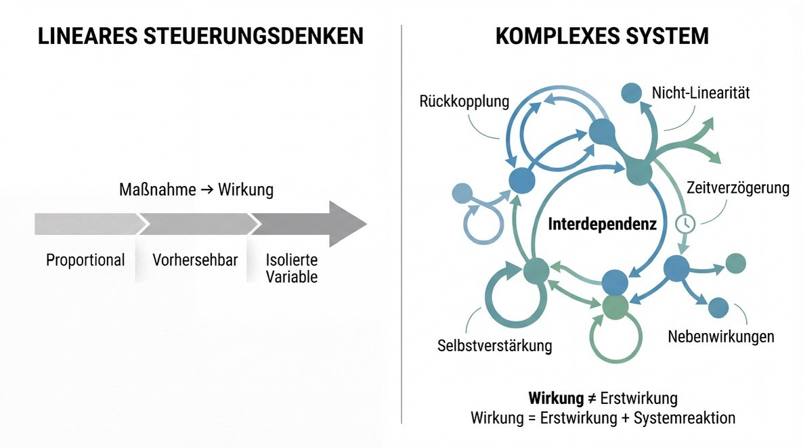
Solange Nachhaltigkeit jedoch innerhalb eines kapitalszentrierten Steuerungsmodells verhandelt wird, bleibt sie in einer additiven Logik gefangen. Einzelindikatoren werden verbessert, ohne die Interdependenzstruktur explizit zu modellieren. Zielkonflikte werden politisch moderiert, aber nicht systemisch berechnet. Synergien werden postuliert, aber nicht formal integriert. Kompensationen sind erlaubt, auch wenn kritische Schwellen überschritten werden.
Das führt zu einer paradoxen Situation: Nachhaltigkeit wird intensiv gemessen - jedoch ohne eine explizite Theorie ihrer Wechselwirkungen.
Die vorliegende Arbeit formuliert daher eine zentrale These:
Nachhaltigkeit bleibt im kapitalszentrierten Steuerungsmodell strukturell unterbestimmt, weil sie additiv integriert wird, während das zugrunde liegende System interdependent, rückgekoppelt und nicht-linear ist.
Eine tragfähige Transformation erfordert deshalb keine weitere Zieldefinition, sondern eine Veränderung des Bewertungsmaßstabs selbst: von Kapital zu interdependenter Netto-Wirkung.
Interdependente Netto-Wirkung bedeutet, dass die Wirkung einer Maßnahme nicht nur als direkte Veränderung einzelner Indikatoren verstanden wird, sondern als Gesamteffekt innerhalb eines gekoppelten Zustandsraums. Sie umfasst Erstwirkungen, Folgewirkungen, Rückkopplungen, Verstärkungen und systemische Schwellen. Sie berücksichtigt, dass bestimmte Dimensionen nicht kompensierbar sind, weil sie systemische Stabilitätsbedingungen darstellen. Und sie macht explizit, dass gesellschaftliche, ökologische und demokratische Effekte nicht nebeneinander existieren, sondern sich gegenseitig strukturieren.
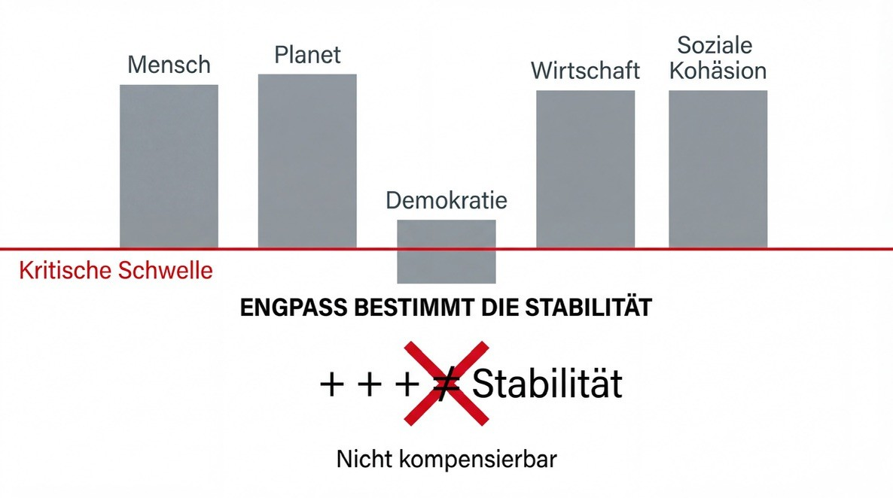
Die Nachhaltigkeitsdebatte steht damit an einem epistemischen Wendepunkt. Nicht neue Ziele sind erforderlich, sondern eine neue Logik ihrer Bewertung. Nicht moralische Appelle, sondern systemische Kohärenz. Nicht Add-Ons, sondern ein verschobener Referenzrahmen.
Der Übergang vom Zielkatalog zum Wirkungsnetz markiert diesen Perspektivwechsel.
II. Komplexität, Nicht-Linearität und Rückkopplung
Warum additive Steuerung in gekoppelten Systemen strukturell scheitert
Wenn Nachhaltigkeit im bestehenden Steuerungsrahmen unterbestimmt bleibt, dann nicht primär aus politischem Unwillen, sondern aus einer strukturellen Fehlannahme über die Natur gesellschaftlicher Systeme. Diese Fehlannahme lautet implizit: Systeme reagieren proportional auf Eingriffe.
Diese Annahme war im Industriezeitalter plausibel. Produktionsketten waren vergleichsweise linear, Märkte national begrenzt, Informationsflüsse langsam, ökologische Effekte zeitlich verzögert und häufig räumlich externalisiert. Ursache und Wirkung ließen sich mit hinreichender Näherung isolieren. Ein zusätzlicher Produktionsfaktor führte zu mehr Output. Eine Preisänderung verschob Angebot und Nachfrage. Steuerung erschien als mechanische Justierung einzelner Variablen.
Doch diese Logik setzt voraus, dass das System trivial ist - im kybernetischen Sinne. Ein triviales System reagiert vorhersehbar auf Input. Es besitzt keine eigene Dynamik, keine Selbstreferenz, keine strukturbildenden Rückkopplungen. Sein Verhalten lässt sich durch stabile Ursache-Wirkungs-Ketten beschreiben.
Moderne Gesellschaften sind das Gegenteil.
Sie sind hochgradig vernetzte, nicht-lineare, adaptive Systeme. Ihre Teilsysteme - Wirtschaft, Finanzmärkte, Ökologie, Gesundheit, digitale Öffentlichkeit, politische Institutionen - sind nicht unabhängig, sondern rekursiv gekoppelt. Jede Veränderung in einem Bereich modifiziert die Bedingungen anderer Bereiche. Rückkopplungsschleifen erzeugen Verstärkungen oder Dämpfungen. Zeitverzögerungen verschieben Wirkungen in die Zukunft. Erwartungsstrukturen beeinflussen reale Entwicklungen. Vertrauen wirkt als Stabilitätsressource. Informationsdynamiken können selbst politische Entscheidungen transformieren.
In solchen Systemen ist additive Steuerung strukturell unzureichend.
Additiv bedeutet: Eine Maßnahme wird entlang eines einzelnen Indikators bewertet. CO₂-Emissionen sinken. Sozialleistungen steigen. Investitionen nehmen zu. Doch diese isolierte Bewertung ignoriert, dass jede Maßnahme zugleich systemische Nebenwirkungen erzeugt, die nicht notwendigerweise in dieselbe Richtung wirken. Ein CO₂-Preis kann Emissionen senken und gleichzeitig soziale Spannungen erhöhen. Eine expansive Geldpolitik kann Investitionen fördern und zugleich Vermögensungleichheit verschärfen. Eine Plattformregulierung kann Desinformation reduzieren und zugleich Marktstrukturen verschieben.
Nicht-Linearität bedeutet, dass Effekte nicht proportional wachsen. Kleine Eingriffe können große systemische Verschiebungen auslösen, während große Interventionen wirkungslos verpuffen. Kipppunkte sind Ausdruck solcher Nicht-Linearität. Wird eine kritische Schwelle überschritten, reorganisiert sich das System qualitativ neu. Ökologische Kaskaden, Finanzkrisen oder politische Polarisierungsdynamiken folgen häufig diesem Muster.
Rückkopplung bedeutet, dass Ergebnisse selbst wieder zu Ursachen werden. Politische Maßnahmen beeinflussen Vertrauen; Vertrauen beeinflusst politische Stabilität; politische Stabilität beeinflusst Investitionen; Investitionen beeinflussen soziale Verteilung; soziale Verteilung beeinflusst wiederum Vertrauen. In solchen rekursiven Strukturen ist es unmöglich, Wirkungen isoliert zu betrachten, ohne die gesamte Interdependenzarchitektur mitzudenken.
Nachhaltigkeitsziele werden jedoch häufig so behandelt, als seien sie unabhängig voneinander optimierbar. Emissionen senken. Biodiversität schützen. Armut reduzieren. Bildung verbessern. Demokratie stärken. Diese Ziele erscheinen als nebeneinanderstehende Felder. Ihre Interdependenz wird zwar rhetorisch anerkannt, aber selten formal integriert.
Genau hier entsteht die strukturelle Unterkomplexität.
Wenn Ziele interdependent sind, dann sind sie Zustandsdimensionen eines gemeinsamen Systems. Verbesserungen in einer Dimension verändern die Dynamik anderer Dimensionen. Manche Kombinationen erzeugen Synergien - etwa wenn Energieeffizienz soziale Kosten senkt und zugleich Emissionen reduziert. Andere Kombinationen erzeugen Trade-offs - etwa wenn kurzfristige Subventionen fiskalische Spielräume verringern oder gesellschaftliche Akzeptanz unterminieren.
Solange diese Kopplungen nicht explizit modelliert werden, bleibt Nachhaltigkeit additiv. Einzelindikatoren können verbessert werden, während das Gesamtsystem destabilisiert wird. Oder umgekehrt: Eine Maßnahme erscheint kurzfristig kostspielig, entfaltet jedoch langfristig stabilisierende Wirkungen, die in der isolierten Bewertung unsichtbar bleiben.
Komplexe Systeme besitzen zudem die Eigenschaft der Selbstorganisation. Sie passen sich an Eingriffe an. Märkte reagieren auf Regulierung. Akteure ändern ihr Verhalten. Technologische Innovationen verschieben Kostenstrukturen. Politische Narrative transformieren Wahrnehmungen. Das System bleibt nicht statisch, während es gesteuert wird. Es verändert seine eigene Reaktionslogik.
Eine Steuerungsarchitektur, die diese Dynamik ignoriert, operiert mit impliziten Vereinfachungen. Sie setzt voraus, dass Indikatoren stabil interpretierbar sind, dass Zielkonflikte extern moderiert werden können und dass Kompensationen möglich sind. Doch bestimmte Dimensionen sind nicht kompensierbar. Werden planetare Grenzen überschritten, kann kein finanzieller Ausgleich ökologische Kipppunkte rückgängig machen. Wird demokratisches Vertrauen systemisch erodiert, kann wirtschaftliches Wachstum es nicht automatisch wiederherstellen. Werden soziale Spaltungen verfestigt, wirken technologische Innovationen allein nicht stabilisierend.
Hier liegt der Kern der Wirkungsökonomie.
Sie beginnt nicht mit einem moralischen Imperativ, sondern mit einer systemtheoretischen Beobachtung: Gesellschaftliche Realität ist interdependent. Wirkung ist nicht eindimensional. Steuerung muss deshalb Netto-Wirkung im gekoppelten Zustandsraum betrachten, nicht isolierte Zielerreichung.
Das bedeutet, dass jede Intervention als Vektor verstanden werden muss, der mehrere Dimensionen gleichzeitig verschiebt. Die direkte Wirkung ist nur der erste Term. Hinzu treten indirekte Effekte über Interdependenzen, Rückkopplungen, Zeitverzögerungen und Adaptation. Die Gesamtauswirkung ist das Resultat dieser Wechselwirkung.
In dieser Perspektive wird Nachhaltigkeit nicht länger als moralisches Zusatzkriterium verstanden, sondern als systemische Stabilitätsbedingung. Sie beschreibt jene Konstellationen, in denen die Interdependenzen nicht destruktiv wirken, sondern regenerative Dynamiken erzeugen. Nachhaltigkeit ist dann kein Ziel neben anderen, sondern ein Ordnungsprinzip für die Kopplungsstruktur des Systems.
Damit verschiebt sich der Fokus von der Frage „Erreichen wir Ziel X?“ zur Frage „Wie verändert eine Maßnahme die Kopplungsarchitektur zwischen X, Y und Z?“. Steuerung wird zu einer Aufgabe der Interdependenzgestaltung.
Additive Logik fragt: Verbessert sich Indikator A? Interdependente Logik fragt: Welche Netto-Verschiebung entsteht im gesamten Zustandsraum?
Diese Unterscheidung markiert die theoretische Basis der Wirkungsökonomie. Sie erklärt, warum Nachhaltigkeit im kapitalszentrierten Steuerungsmodell unterbestimmt bleibt. Nicht weil die Ziele falsch wären, sondern weil ihre Interdependenz nicht strukturbildend berücksichtigt wird.
Im nächsten Schritt muss daher geklärt werden, wie Nachhaltigkeitsdimensionen als Zustandsraum formal verstanden werden können - und warum eine interdependente Netto-Wirkungslogik die logische Konsequenz aus dieser Systembeschreibung ist.
III. Nachhaltigkeitsziele als Zustandsraum
Von der Liste zur Systemkoordinate
Die Diskussion über Nachhaltigkeit wird üblicherweise entlang von Zielkatalogen geführt. Die 17 Ziele für nachhaltige Entwicklung erscheinen als normativer Rahmen, ergänzt durch Unterziele, Indikatoren und Berichtspflichten. Diese Struktur hat enorme kommunikative Kraft entfaltet. Sie ermöglicht Vergleichbarkeit, Messbarkeit und politische Orientierung. Doch zugleich erzeugt sie eine epistemische Verkürzung: Sie suggeriert, dass Nachhaltigkeitsdimensionen als voneinander getrennte Problemfelder verstanden werden können.
Diese Darstellung ist funktional - aber ontologisch unzureichend.
Wenn man Nachhaltigkeit systemtheoretisch betrachtet, sind ihre Dimensionen keine separaten Ziele, sondern Zustandsgrößen eines gemeinsamen Systems. Sie beschreiben unterschiedliche Aspekte desselben gesellschaftlichen Gesamtzustands. Armut, Bildung, Gesundheit, Biodiversität, Energie, Infrastruktur, Ungleichheit, Institutionenqualität oder Diskurskultur existieren nicht nebeneinander wie unabhängige Felder. Sie sind miteinander verschränkt. Ihre Ausprägungen bedingen sich gegenseitig.
Ein Anstieg sozialer Ungleichheit beeinflusst politische Polarisierung. Politische Polarisierung verändert Regulierungsdynamiken. Regulierungsdynamiken beeinflussen Investitionsentscheidungen. Investitionsentscheidungen wirken auf Infrastruktur, Emissionen und Beschäftigung. Beschäftigung beeinflusst soziale Stabilität. Soziale Stabilität wiederum beeinflusst Vertrauen in Institutionen - und damit die Fähigkeit zur kollektiven Problemlösung.
Was hier sichtbar wird, ist kein lineares Ursache-Wirkungs-Schema, sondern ein gekoppelter Zustandsraum.
Der Begriff „Zustandsraum“ stammt ursprünglich aus der System- und Regelungstheorie. Er bezeichnet die Gesamtheit aller Variablen, die den Zustand eines Systems zu einem bestimmten Zeitpunkt vollständig beschreiben. Jede Zustandsdimension ist nicht isoliert interpretierbar, sondern nur im Kontext der anderen Dimensionen sinnvoll. Veränderungen erfolgen nicht eindimensional, sondern als Verschiebungen innerhalb dieses multidimensionalen Raums.
Überträgt man dieses Konzept auf Nachhaltigkeit, ergibt sich ein grundlegender Perspektivwechsel: Nachhaltigkeitsziele sind keine separaten Problemdefinitionen, sondern Koordinaten eines gesellschaftlichen Zustandsraums.
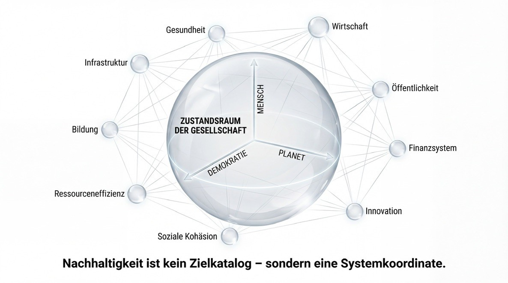
Jede politische oder wirtschaftliche Intervention verschiebt die Position des Systems in diesem Raum. Manche Verschiebungen führen in stabilere Regionen, andere in instabile Konstellationen.
Diese Perspektive verändert die Bewertung grundlegend.
Wenn Nachhaltigkeit als Liste verstanden wird, dann wird Erfolg entlang einzelner Zielerreichungsgrade gemessen. Ein Indikator verbessert sich, also gilt Fortschritt als erzielt. Wenn Nachhaltigkeit jedoch als Zustandsraum verstanden wird, dann wird Erfolg als Netto-Verschiebung im Gesamtgefüge bewertet. Eine Verbesserung in einer Dimension kann durch Verschlechterungen in anderen Dimensionen relativiert oder sogar überkompensiert werden. Umgekehrt können moderate Verbesserungen in mehreren Dimensionen zusammen eine stabile Konfiguration erzeugen, die weit mehr bewirkt als eine extreme Verbesserung in nur einem Bereich.
Der kapitalszentrierte Steuerungsrahmen operiert implizit mit einer eindimensionalen Aggregation: Wert wird primär monetär ausgedrückt. Nachhaltigkeitsdimensionen werden in diese Logik übersetzt, indem sie als Risiken, Kosten oder Marktchancen modelliert werden. Dadurch werden sie in eine vorhandene Achse projiziert, statt als eigenständige Zustandsdimensionen ernst genommen zu werden.
Die Wirkungsökonomie setzt an einem anderen Punkt an. Sie akzeptiert die Multidimensionalität des Zustandsraums und fragt nicht, wie Nachhaltigkeit in Kapital übersetzt werden kann, sondern wie Netto-Wirkung im gesamten Zustandsraum gemessen werden kann. Kapital bleibt dabei eine relevante Größe - aber nicht die primäre Referenzkoordinate.
Diese Verschiebung ist entscheidend.
Ein Zustandsraum besitzt Struktur. Nicht jede Kombination von Zustandswerten ist stabil. Bestimmte Regionen sind resilient, andere fragil. Werden planetare Grenzen überschritten, verändert sich die Struktur des Raums selbst. Werden demokratische Institutionen destabilisiert, verlieren andere Dimensionen an Steuerungsfähigkeit. Wird soziale Kohäsion unterminiert, sinkt die Wahrscheinlichkeit erfolgreicher kollektiver Anpassung.
Nachhaltigkeit ist in diesem Sinne keine moralische Forderung, sondern eine Bedingung für Systemstabilität. Sie beschreibt jene Konfigurationen im Zustandsraum, in denen ökologische Tragfähigkeit, soziale Kohärenz und demokratische Legitimität sich gegenseitig stabilisieren.
Das bedeutet zugleich, dass Kompensation nicht beliebig möglich ist. Eine extreme Verschlechterung in einer kritischen Dimension kann nicht einfach durch Verbesserungen in anderen Dimensionen ausgeglichen werden. Wenn etwa Biodiversität irreversibel verloren geht oder demokratisches Vertrauen kollabiert, kann ökonomisches Wachstum diese Verluste nicht substituieren. Bestimmte Zustandsdimensionen wirken als strukturelle Mindestbedingungen. Ihre Unterschreitung verändert die Dynamik des gesamten Raums.
Hier wird deutlich, warum additive Nachhaltigkeitslogik an Grenzen stößt. Sie erlaubt rechnerische Kompensation. Sie akzeptiert, dass negative Effekte in einer Dimension durch positive Effekte in einer anderen aufgewogen werden können. Im Zustandsraum jedoch existieren kritische Schwellen, jenseits derer das System qualitativ kippt. Solche Schwellen lassen sich nicht linear verrechnen.
Die Einführung des Zustandsraumdenkens hat deshalb zwei zentrale Konsequenzen.
Erstens: Nachhaltigkeitsbewertung muss Netto-Wirkung berücksichtigen - nicht nur direkte, sondern auch indirekte Effekte über Interdependenzen hinweg. Eine Maßnahme wird nicht allein danach bewertet, wie sie einen einzelnen Indikator verschiebt, sondern wie sie die Gesamtstruktur des Zustandsraums beeinflusst.
Zweitens: Steuerung wird zu einer Frage der Positionsveränderung im Raum, nicht zur isolierten Zielerreichung. Politik, Wirtschaft und Gesellschaft bewegen sich kontinuierlich durch diesen Raum. Jede Entscheidung ist eine Richtungswahl. Die zentrale Frage lautet nicht „Erreichen wir Ziel 13?“, sondern „In welche Region des Zustandsraums bewegen wir uns - und welche Kopplungsdynamiken verstärken wir?“.
In dieser Perspektive wird Nachhaltigkeit als Wirkungsnetz sichtbar. Ziele sind Knotenpunkte in einem Geflecht aus Kopplungen. Ihre Bedeutung ergibt sich aus ihren Relationen, nicht aus ihrer isolierten Definition. Steuerung bedeutet, diese Relationen explizit zu berücksichtigen.
Damit ist die Grundlage gelegt, um Interdependenz nicht nur qualitativ, sondern formal zu denken. Wenn Nachhaltigkeitsdimensionen Zustandskoordinaten sind, dann existieren zwischen ihnen Kopplungsbeziehungen. Diese Kopplungen können synergetisch, antagonistisch oder neutral sein. Sie können stark oder schwach ausgeprägt sein. Sie können zeitlich verzögert wirken oder unmittelbare Effekte entfalten.
Die nächste Frage lautet daher: Wie lässt sich diese Interdependenzstruktur beschreiben - und welche Konsequenzen ergeben sich daraus für die Bewertung von Wirkung?
IV. Interdependenzmatrix und Netto-Wirkung
Die Architektur des Wirkungsnetzes
Wenn Nachhaltigkeitsdimensionen als Zustandskoordinaten eines gemeinsamen Systems verstanden werden, dann ist der nächste Schritt zwingend: Ihre Beziehungen müssen explizit gemacht werden. Ein Zustandsraum ohne Interdependenzstruktur bleibt eine Beschreibung - keine Steuerungsarchitektur.
Zwischen den Dimensionen existieren Kopplungen. Manche verstärken sich gegenseitig, andere wirken antagonistisch. Manche Effekte treten unmittelbar ein, andere entfalten sich zeitverzögert. Manche Beziehungen sind stabilisierend, andere destabilisieren das Gesamtsystem. Diese Kopplungen sind nicht zufällig; sie folgen strukturellen Mustern. Energiepreise beeinflussen soziale Verteilung. Soziale Verteilung beeinflusst politische Stabilität. Politische Stabilität beeinflusst Investitionssicherheit. Investitionssicherheit beeinflusst Innovationsdynamik. Innovationsdynamik beeinflusst wiederum Emissionsintensität und Ressourceneffizienz.
Diese Beziehungen lassen sich als Interdependenzstruktur beschreiben.
In der Systemtheorie werden solche Strukturen häufig als Kopplungsmatrizen modelliert. Jede Dimension beeinflusst andere Dimensionen mit einer bestimmten Stärke und einem bestimmten Vorzeichen. Ein positiver Wert steht für eine synergetische Beziehung - eine Verbesserung in Dimension A stärkt Dimension B. Ein negativer Wert steht für einen Trade-off - eine Verbesserung in A verschlechtert B. Ein Wert nahe null zeigt geringe Kopplung.
Eine solche Interdependenzmatrix ist kein bloßes Recheninstrument. Sie ist eine explizite Theorie darüber, wie gesellschaftliche Dynamiken zusammenhängen. Sie zwingt dazu, implizite Annahmen sichtbar zu machen. Sie beantwortet nicht nur die Frage „Was wollen wir verbessern?“, sondern auch „Welche Nebenwirkungen akzeptieren oder vermeiden wir?“.
Im kapitalszentrierten Steuerungsmodell bleiben diese Kopplungen implizit. Marktpreise aggregieren Informationen, aber sie bilden nicht systematisch ökologische oder demokratische Wechselwirkungen ab. Externe Effekte werden teilweise internalisiert, doch ihre Rückkopplungsstruktur bleibt fragmentarisch. Nachhaltigkeitsberichte dokumentieren Indikatoren, ohne deren systemische Verknüpfung explizit zu modellieren.
Die Wirkungsökonomie setzt hier an. Sie versteht jede Intervention - sei es ein Produkt, eine Investition, eine Regulierung oder eine politische Maßnahme - als Vektor, der mehrere Zustandsdimensionen gleichzeitig verschiebt. Die direkte Wirkung ist nur der erste Term dieser Verschiebung. Über die Interdependenzmatrix entstehen Folgewirkungen. Diese Folgewirkungen können sich verstärken, abschwächen oder in neue Dynamiken übergehen.
Netto-Wirkung ist daher nicht identisch mit Erstwirkung.
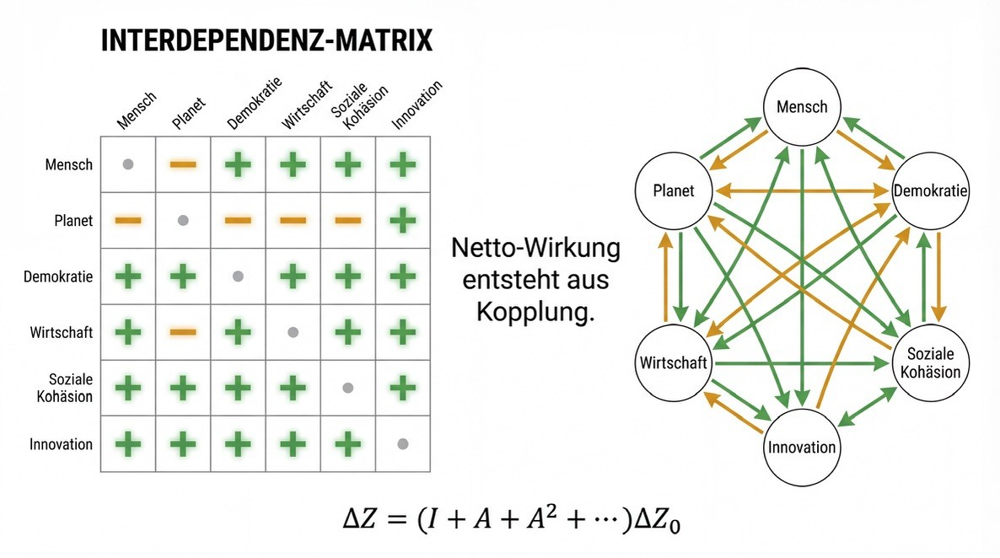
Netto-Wirkung entsteht als Resultat der gesamten Wirkungskaskade: direkte Effekte plus indirekte Effekte über Kopplungen, plus Rückkopplungen höherer Ordnung. In stabilen Systemen kann diese Wirkungskaskade konvergieren. In instabilen Systemen kann sie eskalieren. In beiden Fällen ist die isolierte Betrachtung eines einzelnen Indikators unzureichend.
Diese Perspektive verändert die Bewertung von Maßnahmen fundamental.
Ein Beispiel: Eine energetische Sanierung reduziert Emissionen unmittelbar. Das ist die direkte Wirkung. Über geringere Energiekosten steigt jedoch die Kaufkraft der Haushalte. Höhere Kaufkraft beeinflusst Konsummuster. Konsummuster beeinflussen Produktionsstrukturen. Produktionsstrukturen beeinflussen wiederum Emissionsintensität und Arbeitsmärkte. Gleichzeitig wirkt die Sanierung auf lokale Beschäftigung, soziale Stabilität und politische Akzeptanz von Klimapolitik. Die Gesamtwirkung ergibt sich aus diesem Netz von Verschiebungen - nicht allein aus der initialen Emissionsreduktion.
Eine additive Logik würde nur den ersten Effekt bilanzieren. Eine interdependente Logik berücksichtigt die gesamte Verschiebung im Zustandsraum.
Dabei entsteht eine weitere entscheidende Einsicht: Nicht alle Dimensionen sind gleichartig kompensierbar. In gekoppelten Systemen existieren Engpass- oder Bottleneck-Dimensionen. Wird eine dieser kritischen Dimensionen unter eine Mindestschwelle gedrückt, destabilisiert sich das Gesamtsystem, unabhängig von Verbesserungen in anderen Bereichen. Planetare Grenzen sind ein offensichtliches Beispiel. Demokratische Erosion ein anderes. Auch soziale Kohäsion kann eine solche Engpassdimension darstellen.
Daraus folgt, dass Netto-Wirkung nicht als einfache Summe verstanden werden kann. Eine stark negative Verschiebung in einer kritischen Dimension darf nicht durch moderate Verbesserungen in anderen Dimensionen neutralisiert werden. Systemische Stabilität erfordert Mindestbedingungen. Diese Einsicht bildet die Grundlage für das, was in der Wirkungsökonomie als Reverse-Merit-Logik beschrieben werden kann: Der Engpass bestimmt die Bewertung.
Interdependenzdenken führt damit zu einer doppelten Verschiebung. Erstens von der isolierten Zieloptimierung zur Netto-Verschiebung im Zustandsraum. Zweitens von der linearen Aggregation zur strukturellen Mindestbedingung.
Damit wird Steuerung zu einer Frage der Architektur, nicht der Addition. Es geht nicht mehr darum, möglichst viele Einzelindikatoren zu verbessern, sondern darum, Kopplungsstrukturen so zu gestalten, dass regenerative Dynamiken entstehen und destruktive Rückkopplungen gedämpft werden. Wirtschaft, Staat, Finanzsystem, Öffentlichkeit und Individuum erscheinen nicht länger als getrennte Sphären, sondern als interdependente Subsysteme, deren Stabilität voneinander abhängt.
An diesem Punkt wird deutlich, warum Nachhaltigkeit im kapitalszentrierten Steuerungsmodell unterbestimmt bleibt. Kapital aggregiert Wert entlang einer Achse. Interdependente Netto-Wirkung verlangt jedoch eine mehrdimensionale Architektur. Sie erfordert explizite Kopplungsannahmen, Schwellenwerte und Rückkopplungslogiken.
Die Wirkungsökonomie ist in diesem Sinne keine moralische Erweiterung der Marktwirtschaft, sondern ihre systemische Rekonstruktion unter Bedingungen von Komplexität. Sie ersetzt nicht Wettbewerb oder Innovation, sondern verschiebt die Bewertungslogik von eindimensionaler Kapitalakkumulation zu interdependenter Netto-Wirkung.
Damit ist die theoretische Grundlage gelegt.
Doch ein weiterer Aspekt bleibt zentral: Wie wirken immaterielle Größen wie Vertrauen, Identität, Diskursqualität oder gesellschaftliche Resonanz in diesem Zustandsraum? Und warum kann selbst eine formal positive Maßnahme wirkungslos bleiben, wenn sie keine soziale Resonanz erzeugt?
Im nächsten Abschnitt muss daher die Rolle von Resonanz als Verstärkungs- und Dämpfungsmechanismus innerhalb des Wirkungsnetzes geklärt werden.
V. Resonanz, Vertrauen und Kohäsion
Die Verstärkungsmechanik gesellschaftlicher Wirkung
Bis hierher wurde Nachhaltigkeit als interdependenter Zustandsraum beschrieben, dessen Dynamik durch Kopplungen, Rückkopplungen und Engpassbedingungen geprägt ist. Doch ein entscheidender Faktor bleibt noch unbestimmt: Warum entfalten manche Maßnahmen weitreichende Wirkung, während andere trotz guter Konzeption wirkungslos bleiben? Warum kippen gesellschaftliche Dynamiken manchmal abrupt, obwohl objektive Indikatoren stabil erscheinen?
Die Antwort liegt in einer Dimension, die in klassischen ökonomischen Modellen kaum vorkommt: Resonanz.
Resonanz ist kein sentimentaler Begriff. Systemisch verstanden bezeichnet sie die Fähigkeit eines Systems, auf Impulse nicht nur zu reagieren, sondern sie aufzunehmen, zu verstärken und in eigene Dynamik zu übersetzen. In sozialen Kontexten manifestiert sich Resonanz als Vertrauen, Identifikation, Akzeptanz, Sinnstiftung und kollektive Anschlussfähigkeit.
Eine Maßnahme kann formal positive Netto-Wirkung entfalten - etwa Emissionen senken oder Infrastruktur verbessern - und dennoch gesellschaftlich scheitern, wenn sie keine Resonanz erzeugt. Umgekehrt kann eine moderate Intervention enorme systemische Dynamik entwickeln, wenn sie Vertrauen stärkt, Identität stabilisiert oder kollektive Handlungsfähigkeit mobilisiert.
Resonanz wirkt als Verstärkungs- oder Dämpfungsfaktor innerhalb des Zustandsraums.
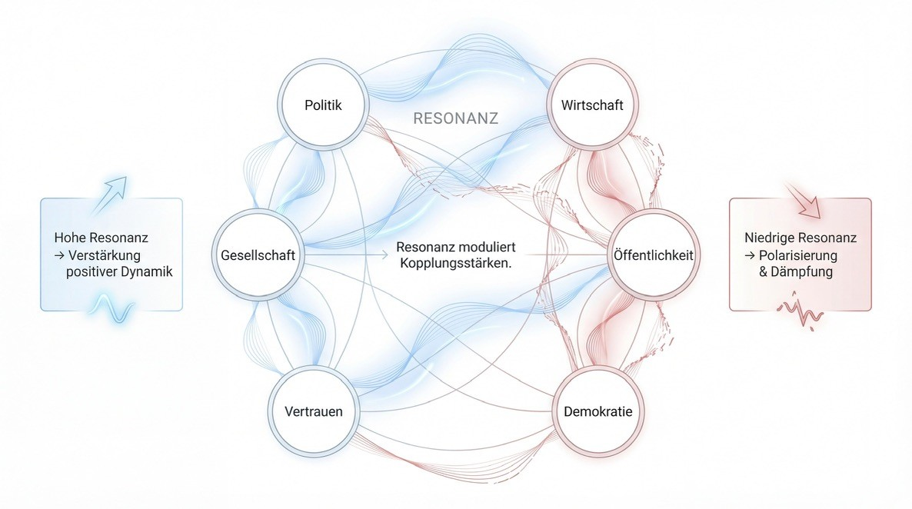
Nimmt man das Zustandsraum-Modell ernst, dann sind Vertrauen, Diskursqualität, gesellschaftliche Kohäsion und demokratische Legitimität keine „weichen Faktoren“, sondern strukturelle Kopplungsvariablen. Sie bestimmen, wie stark andere Effekte durchschlagen. Sinkt Vertrauen, werden selbst objektiv sinnvolle Maßnahmen als Bedrohung wahrgenommen. Polarisierte Diskurse erzeugen antagonistische Rückkopplungen. Fehlende Identifikation schwächt die kollektive Anpassungsfähigkeit.
Resonanz ist damit keine Alternative zur Wirkung, sondern eine Bedingung ihrer Entfaltung.
In der Sprache des Zustandsraums bedeutet das: Bestimmte Dimensionen modulieren die Wirksamkeit anderer Dimensionen. Vertrauen beeinflusst die Durchsetzungskraft von Regulierung. Diskursqualität beeinflusst Investitionssicherheit. Soziale Kohäsion beeinflusst Innovationsbereitschaft. Demokratiequalität beeinflusst die Stabilität langfristiger Politiken.
Resonanz ist somit ein Meta-Kopplungsfaktor.
Sie wirkt nicht primär durch direkte materielle Effekte, sondern durch Veränderung der Kopplungsstärke zwischen anderen Dimensionen. In einem resonanten System können positive Impulse sich selbst verstärken. In einem dissonanten System werden selbst konstruktive Interventionen abgeschwächt oder ins Gegenteil verkehrt.
Diese Einsicht ist entscheidend für eine interdependente Wirkungslogik.
Denn sie erklärt, warum rein technokratische Nachhaltigkeitspolitik häufig an gesellschaftlichen Widerständen scheitert. CO₂-Preise, Sanierungspflichten oder Plattformregulierung mögen systemisch sinnvoll sein - doch ohne Resonanz destabilisieren sie andere Zustandsdimensionen, etwa soziale Gerechtigkeit oder demokratische Legitimität. Die resultierenden Gegenbewegungen verändern die Interdependenzstruktur selbst.
Resonanz fungiert damit als Stabilitätsindikator.
Ein System mit hoher Kohäsion, hoher Diskursqualität und starkem Vertrauen kann größere Transformationen verkraften, weil Rückkopplungen konstruktiv wirken. Ein System mit fragmentierter Öffentlichkeit, sinkender Institutionenbindung und ausgeprägter Polarisierung reagiert empfindlich auf selbst moderate Veränderungen.
In diesem Sinne ist Resonanz keine ästhetische Kategorie, sondern eine strukturelle Bedingung für Transformationsfähigkeit.
Die Wirkungsökonomie integriert diese Dimension explizit, indem sie Demokratie, Öffentlichkeit und gesellschaftliche Kohäsion als eigenständige Zustandsdimensionen behandelt - nicht als Nebenprodukte wirtschaftlicher Entwicklung. Sie erkennt an, dass ökonomische, ökologische und demokratische Stabilität wechselseitig voneinander abhängen. Resonanz wird dadurch Teil der Bewertungsarchitektur.
Damit verschiebt sich auch die Rolle von Kommunikation. Kommunikation ist nicht bloße Begleitmaßnahme politischer Entscheidungen, sondern Eingriff in die Interdependenzstruktur. Narrative verändern Erwartungshorizonte. Erwartungshorizonte verändern Verhalten. Verhalten verändert Zustände. Zustände verändern wiederum Narrative. Dieser rekursive Zusammenhang ist selbst Teil des Wirkungsnetzes.
Resonanz erklärt daher auch die Dynamik autoritärer oder populistischer Bewegungen. Sie erzeugen starke emotionale Anschlussfähigkeit, selbst wenn ihre materiellen Wirkungen destruktiv sind. Das System reagiert nicht allein auf objektive Indikatoren, sondern auf wahrgenommene Bedeutung.
Eine interdependente Wirkungslogik muss diese Dynamik berücksichtigen. Sie darf sich nicht auf quantitative Kennzahlen beschränken, sondern muss die Verstärkungsmechanik sozialer Kohäsion explizit einbeziehen. Netto-Wirkung umfasst daher nicht nur materielle Effekte, sondern auch strukturelle Veränderungen in Vertrauen, Legitimität und gesellschaftlicher Bindung.
Das bedeutet nicht, dass Resonanz über normative Bewertung gestellt wird. Im Gegenteil: Resonanz ohne positive Netto-Wirkung kann destruktiv sein. Polarisierung kann hoch resonant sein. Hass kann mobilisieren. Auch solche Dynamiken sind Verstärkungsprozesse - allerdings destabilisieren sie den Zustandsraum langfristig.
Die Integration von Resonanz erfordert daher eine doppelte Perspektive: Sie ist Verstärkungsfaktor, aber ihre Richtung muss mit systemischer Stabilität kompatibel sein. Resonanz wird so zu einer qualitativen Modulationsvariable innerhalb der Interdependenzmatrix.
An diesem Punkt wird die Architektur der Wirkungsökonomie sichtbar:
- Nachhaltigkeitsdimensionen als Zustandskoordinaten - Interdependenzmatrix als Kopplungsstruktur - Netto-Wirkung als Gesamtverschiebung im Zustandsraum - Engpassbedingungen als Stabilitätsgrenzen - Resonanz als Verstärkungs- oder Dämpfungsmechanismus
Damit entsteht ein kohärentes Modell gesellschaftlicher Dynamik.
Doch eine entscheidende Frage bleibt noch offen: Wenn bestimmte Dimensionen strukturelle Mindestbedingungen darstellen und Resonanz die Wirksamkeit moduliert - wie kann verhindert werden, dass destruktive Effekte durch rechnerische Kompensation verdeckt werden?
Hier setzt die Engpass- oder Reverse-Merit-Logik an.
VI. Engpass, Schwelle und Nicht-Kompensierbarkeit
Warum Mindestbedingungen den Maßstab bestimmen
Interdependenz allein genügt nicht, um Nachhaltigkeit strukturell zu bestimmen. Ein gekoppelter Zustandsraum erklärt Wechselwirkungen, Verstärkungen und Nebenfolgen. Doch er beantwortet noch nicht die normative und zugleich systemische Frage: Sind alle Dimensionen beliebig verrechenbar?
Die gängige Nachhaltigkeitslogik operiert implizit mit Kompensationsannahmen. Ein Unternehmen kann hohe Emissionen ausweisen und diese durch Investitionen in soziale Projekte ausgleichen. Ein Staat kann demokratische Defizite durch wirtschaftliches Wachstum relativieren. Ein Finanzmarkt kann ökologische Schäden mit kurzfristigen Renditen überdecken. Diese Kompensationslogik folgt der Aggregationsstruktur kapitalzentrierter Bewertung: Positive und negative Effekte werden summiert. Der Netto-Wert entscheidet.
Doch komplexe Systeme funktionieren nicht additiv.
In nicht-linearen, gekoppelten Systemen existieren Engpassdimensionen - Variablen, deren Unterschreitung die Stabilität des gesamten Systems gefährdet. Solche Engpässe wirken nicht proportional, sondern strukturbildend. Wird eine kritische Schwelle überschritten, reorganisiert sich das System qualitativ neu. Kipppunkte in ökologischen Systemen sind das offensichtlichste Beispiel. Das Abschmelzen von Eisschilden, das Kollabieren von Ökosystemen oder das Absterben von Korallenriffen lassen sich nicht durch wirtschaftliche Gewinne kompensieren. Die Struktur des Systems verändert sich irreversibel.
Ähnliches gilt für demokratische Stabilität. Sinkt institutionelles Vertrauen unter eine kritische Schwelle, entstehen Selbstverstärkungseffekte: Polarisierung verstärkt Misstrauen, Misstrauen schwächt Legitimität, Legitimitätsschwäche destabilisiert Entscheidungsprozesse, instabile Entscheidungsprozesse verstärken Polarisierung. Auch hier wirkt eine Engpassdimension. Wirtschaftliches Wachstum kann diesen Verlust nicht einfach ausgleichen.
Engpasslogik bedeutet, dass bestimmte Zustandsdimensionen Mindestbedingungen darstellen. Sie sind nicht nur Teil des Systems - sie sind strukturelle Voraussetzungen seiner Reproduktionsfähigkeit.
In der Sprache des Zustandsraums bedeutet das: Es existieren Regionen, die stabil sind, und Regionen, die instabil werden, wenn einzelne Koordinaten unter kritische Werte fallen. Diese Schwellen sind nicht beliebig. Sie ergeben sich aus planetaren Grenzen, sozialen Mindestbedingungen und demokratischen Stabilitätsanforderungen.
Die Konsequenz ist fundamental: Netto-Wirkung darf nicht als einfache Summe verstanden werden. Eine stark negative Verschiebung in einer Engpassdimension kann nicht durch moderate Verbesserungen in anderen Dimensionen neutralisiert werden. Systemische Stabilität erfordert Mindeststandards.
Diese Einsicht bildet die Grundlage dessen, was in der Wirkungsökonomie als Reverse-Merit-Logik beschrieben werden kann.
Während klassische Merit-Logik besagt, dass das beste Angebot den Markt bestimmt, folgt die Reverse-Merit-Logik einer anderen Struktur: Der kritischste Engpass bestimmt die Bewertung. Nicht die Summe positiver Effekte ist entscheidend, sondern die niedrigste Stabilitätsdimension. Der Maßstab verschiebt sich vom Maximum zum Minimum.
Diese Logik ist nicht moralisch motiviert, sondern systemisch notwendig.
Wenn planetare Stabilität unterschritten wird, verliert das System seine ökologische Basis. Wenn demokratische Legitimität kollabiert, verliert es seine Steuerungsfähigkeit. Wenn soziale Kohäsion zerfällt, verliert es seine Anpassungsfähigkeit. Diese Dimensionen sind nicht austauschbar. Sie bilden die strukturelle Infrastruktur des Zustandsraums.
Reverse-Merit-Logik bedeutet daher: Die Bewertung einer Maßnahme orientiert sich an der kritischsten betroffenen Dimension. Eine Intervention, die zwar ökonomische Effizienz steigert, aber demokratische Stabilität unterminiert, kann nicht positiv bewertet werden. Ebenso wenig kann eine wirtschaftlich rentable Aktivität legitim sein, wenn sie irreversible ökologische Schäden verursacht.
Diese Nicht-Kompensierbarkeit unterscheidet die Wirkungsökonomie grundlegend von ESG-Additivität. ESG erlaubt häufig Ausgleichslogiken. Eine gute Governance-Note kann eine schlechte Umweltperformance relativieren. Eine starke soziale Komponente kann ökologische Defizite überdecken. Im Engpassdenken ist das strukturell unzulässig.
Engpassdimensionen wirken wie Tragpfeiler. Sie können nicht durch Dekoration ersetzt werden.
Diese Perspektive erklärt auch, warum Nachhaltigkeit im kapitalszentrierten Steuerungsmodell unterbestimmt bleibt. Kapitalaggregation erlaubt Kompensation. Interdependente Stabilitätslogik erfordert Mindestbedingungen. Der Maßstab verschiebt sich von Renditeoptimierung zu Stabilitätssicherung.
Damit entsteht eine neue Bewertungsarchitektur. Wirkung wird nicht entlang einer eindimensionalen Achse aggregiert, sondern entlang einer multidimensionalen Struktur bewertet, in der Mindestbedingungen nicht unterschritten werden dürfen. Der „schwächste Punkt“ definiert die systemische Tragfähigkeit.
Diese Logik ist zugleich restriktiv und produktiv. Restriktiv, weil sie destruktive Aktivitäten klar begrenzt. Produktiv, weil sie Innovation in jene Bereiche lenkt, die mehrere Dimensionen gleichzeitig stabilisieren. Sie belohnt nicht bloße Effizienz, sondern strukturelle Kohärenz.
Engpasslogik transformiert damit die Steuerungsfrage. Nicht „Wie maximieren wir Wert?“ sondern „Wie vermeiden wir strukturelle Destabilisierung?“ wird zum Leitprinzip. Nachhaltigkeit erscheint nicht länger als Zusatzoption, sondern als Bedingung der Möglichkeit wirtschaftlicher Aktivität.
Mit dieser Engpassperspektive ist die theoretische Architektur vollständig:
- Zustandsraum statt Zielkatalog - Interdependenzmatrix statt isolierter Indikatoren - Netto-Wirkung statt Erstwirkung - Resonanz als Verstärkungsmechanismus - Engpasslogik als Stabilitätsbedingung
Doch Theorie allein genügt nicht. Die entscheidende Frage lautet nun: Wie wird diese Architektur in eine lernende Steuerungslogik übersetzt? Wie kann ein politisches und ökonomisches System interdependente Netto-Wirkung operationalisieren, ohne in technokratische Übersteuerung zu verfallen?
Hier beginnt der Übergang von der Systemtheorie zur Institutionenarchitektur.
VII. Vom Modell zur Steuerung
Die lernende Architektur der Wirkungsökonomie
Mit der Einführung des Zustandsraums, der Interdependenzmatrix, der Resonanzdimension und der Engpasslogik ist die theoretische Struktur beschrieben. Doch jede Theorie gesellschaftlicher Komplexität steht vor derselben Frage: Wie wird sie handlungsfähig, ohne in technokratische Übersteuerung oder normativen Dogmatismus zu verfallen?
Komplexe Systeme lassen sich nicht zentralistisch kontrollieren. Sie sind adaptiv, selbstreferenziell und dynamisch. Versuche, sie mechanisch zu steuern, erzeugen häufig unerwünschte Nebenwirkungen. Gleichzeitig ist Nicht-Steuerung keine Option, wenn planetare und demokratische Stabilität gefährdet sind.
Die Lösung liegt nicht in stärkerer Kontrolle, sondern in lernender Steuerung.
Eine lernende Steuerungsarchitektur akzeptiert, dass Wissen über Interdependenzen unvollständig ist. Sie arbeitet mit Hypothesen über Kopplungsstrukturen, misst Wirkungen iterativ, korrigiert Annahmen und passt Instrumente an. Sie ersetzt statische Zielvorgaben durch dynamische Rückkopplungsschleifen.
In dieser Perspektive wird Politik zu einem kontinuierlichen Feedbackprozess.
Jede Maßnahme wird als Eingriff in den Zustandsraum verstanden. Ihre Erstwirkung wird gemessen, ihre Folgewirkungen beobachtet, ihre Resonanz bewertet. Auf dieser Basis erfolgt Nachjustierung. Steuerung ist kein einmaliger Akt, sondern ein iterativer Zyklus aus Intervention, Messung, Bewertung und Anpassung.
Die Wirkungsökonomie institutionalisiert diesen Zyklus.
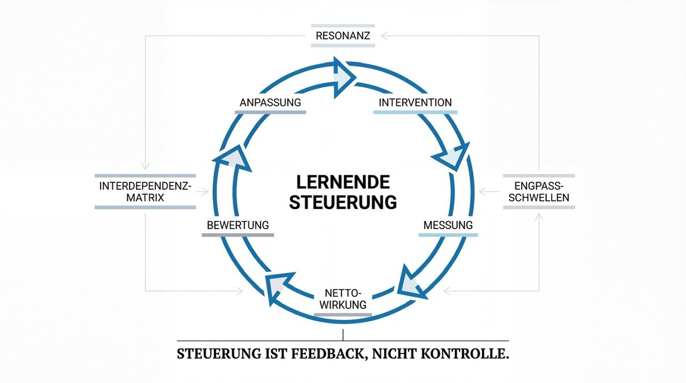
Erstens durch explizite Wirkungsbewertung entlang der Zustandsdimensionen Mensch, Planet und Demokratie. Diese Dimensionen fungieren nicht als moralische Dekoration, sondern als strukturelle Koordinaten des Zustandsraums. Jede Maßnahme wird entlang dieser Koordinaten bewertet - nicht nur hinsichtlich ihrer direkten Effekte, sondern ihrer Netto-Verschiebung unter Berücksichtigung von Interdependenzen.
Zweitens durch die Definition von Engpassschwellen. Mindestbedingungen werden nicht situativ politisiert, sondern transparent operationalisiert. Planetare Grenzen, soziale Mindeststandards und demokratische Stabilitätsindikatoren bilden Referenzpunkte, die nicht unterschritten werden dürfen. Diese Schwellen wirken als harte Leitplanken im Zustandsraum.
Drittens durch institutionalisierte Rückkopplung. Ein Wirkungsrat oder eine vergleichbare Instanz fungiert nicht als normsetzende Autorität, sondern als Evaluationsorgan. Seine Aufgabe ist es, Interdependenzen sichtbar zu machen, Netto-Wirkungen zu berechnen, Annahmen zu überprüfen und Anpassungsbedarf zu identifizieren. Entscheidungen bleiben demokratisch legitimiert, aber sie werden systemisch informiert.
Viertens durch einen Wirkungshaushalt. Analog zum Finanzhaushalt wird Wirkung als knappe Ressource behandelt. Negative Netto-Wirkung erhöht systemische Belastung, positive Netto-Wirkung erhöht Stabilität. Budgetierung erfolgt nicht nur monetär, sondern wirkungsbasiert. Investitionen werden danach bewertet, ob sie Engpässe entschärfen oder neue destabilisieren.
Diese Architektur ist weder planwirtschaftlich noch marktfeindlich. Märkte bleiben dezentrale Entdeckungsprozesse. Wettbewerb bleibt Innovationsmotor. Doch die Bewertungslogik verschiebt sich. Unternehmen konkurrieren nicht nur um Rendite, sondern um strukturelle Kohärenz. Kapital wird nicht abgeschafft, sondern in einen interdependenten Referenzrahmen eingebettet.
Wichtig ist dabei: Lernende Steuerung bedeutet Unsicherheitsakzeptanz. Interdependenzmatrizen sind Annäherungen. Resonanzindikatoren sind dynamisch. Engpassschwellen können sich verschieben. Doch genau deshalb ist Iteration zentral. Statt Perfektion zu behaupten, wird Anpassungsfähigkeit institutionalisiert.
Diese Perspektive vermeidet zwei Extreme. Sie vermeidet technokratischen Determinismus, der glaubt, komplexe Systeme vollständig berechnen zu können. Und sie vermeidet laissez-faire-Naivität, die Interdependenzen ignoriert. Sie anerkennt Komplexität - und reagiert mit lernender Struktur.
In dieser Architektur wird Nachhaltigkeit nicht als Zusatzprogramm behandelt, sondern als systemischer Referenzrahmen. Kapital bleibt eine relevante Variable, aber nicht der alleinige Aggregator. Wirkung wird zur Leitgröße. Interdependenz wird explizit. Resonanz wird berücksichtigt. Engpässe definieren Mindestbedingungen. Rückkopplung institutionalisiert Anpassung.
Damit schließt sich der Kreis zur Ausgangsthese.
Nachhaltigkeit bleibt im kapitalszentrierten Steuerungsmodell unterbestimmt, weil sie additiv integriert wird. Eine interdependente Wirkungslogik ersetzt Addition durch Architektur. Sie verschiebt den Maßstab von eindimensionaler Aggregation zu multidimensionaler Stabilitätsbewertung. Sie erkennt an, dass gesellschaftliche Systeme nicht linear reagieren. Und sie institutionalisiert Lernen als zentrales Steuerungsprinzip.
Der Übergang vom Zielkatalog zum Wirkungsnetz ist damit nicht nur eine theoretische Verschiebung. Er ist eine epistemische Transformation: von isolierter Optimierung zu struktureller Kohärenz.
VIII. Formale Modellierungsskizze
Vektor, Matrix, Engpass-Operator
Die bisherige Argumentation hat Nachhaltigkeit als interdependenten Zustandsraum beschrieben. Um diese Architektur anschlussfähig für quantitative Bewertung und institutionelle Steuerung zu machen, bedarf es einer formalen Skizze. Diese Skizze erhebt keinen Anspruch auf vollständige Berechenbarkeit komplexer Systeme. Sie dient vielmehr der expliziten Strukturierung impliziter Annahmen.
1. Der Zustandsvektor
Sei
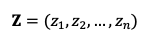
der Zustandsvektor des gesellschaftlichen Systems.
Jede Komponente zi repräsentiert eine Nachhaltigkeitsdimension - etwa ökologische Stabilität, soziale Kohäsion, demokratische Legitimität, Gesundheit, Bildung, Ressourceneffizienz oder ökonomische Leistungsfähigkeit. Der konkrete Zuschnitt kann variieren, doch entscheidend ist: Der Systemzustand ist multidimensional.
Eine politische oder wirtschaftliche Maßnahme M erzeugt eine Erstverschiebung:
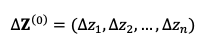
Diese Erstwirkung bildet die direkte Veränderung einzelner Dimensionen ab.
2. Die Interdependenzmatrix
Zwischen den Dimensionen existieren Kopplungen. Diese lassen sich als Matrix darstellen:
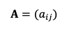
wobei aij die Stärke und Richtung des Einflusses von Dimension i auf Dimension j beschreibt.
- aij > 0: synergetische Kopplung
- aij < 0: antagonistische Kopplung
- aij = 0: keine signifikante Kopplung
Die Gesamtauswirkung einer Maßnahme ergibt sich nicht allein aus der Erstwirkung, sondern aus der Wirkungskaskade über diese Matrix. Formal kann man die Netto-Verschiebung approximieren als:
Dies beschreibt die iterative Rückkopplung über direkte und indirekte Effekte. In stabilen Systemen konvergiert diese Reihe. In instabilen Systemen divergiert sie - ein Hinweis auf strukturelle Destabilisierung.
Diese Darstellung macht explizit: Wirkung ist nicht eindimensional. Sie ist das Resultat rekursiver Kopplungen.
3. Resonanz als Modulationsfaktor
Resonanz wirkt als Verstärkungs- oder Dämpfungsparameter auf die Kopplungsstärken. Formal lässt sich dies als Modulationsmatrix R verstehen, die bestimmte Elemente von A skaliert.
Hohe gesellschaftliche Kohäsion erhöht etwa die Wirksamkeit von Reformen. Polarisierung schwächt sie. Damit wird Resonanz Teil der Dynamik, nicht bloßes Beiwerk.
4. Der Engpass-Operator
Die entscheidende Abweichung von additiver Logik liegt in der Bewertung.
Sei θi der Mindestschwellenwert für Dimension i. Wird zi < θi, ist die Systemstabilität gefährdet.
Die Bewertungsfunktion W darf daher nicht rein summativ sein. Statt
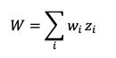
tritt eine Engpass-Funktion:
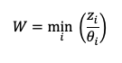
oder allgemeiner eine Funktion, die die kritischste Dimension überproportional gewichtet.
Der Engpass bestimmt die Tragfähigkeit. Positive Effekte in anderen Dimensionen können ein Unterschreiten kritischer Schwellen nicht neutralisieren.
5. Lernende Iteration
Da Interdependenzen nicht statisch sind, muss A iterativ angepasst werden. Empirische Daten, Feedbackschleifen und Wirkungsmonitoring modifizieren die Matrix. Steuerung wird zum rekursiven Lernprozess:
Intervention
Messung
Aktualisierung der Kopplungsannahmen
Anpassung der Maßnahme
Damit wird das Modell nicht deterministisch, sondern adaptiv.
Diese formale Skizze zeigt: Die Wirkungsökonomie ist modellierbar. Sie ersetzt eindimensionale Aggregation durch eine explizite Interdependenzarchitektur mit Engpasslogik und Resonanzmodulation.
IX. Schluss: Der epistemische Bruch - Von Kapital zu Kohärenz
Die Nachhaltigkeitsdebatte steht nicht vor einem Zieldefizit. Sie steht vor einem Maßstabsproblem.
Das kapitalszentrierte Steuerungsmodell aggregiert entlang einer Achse. Es hat historisch enorme Produktivitätsgewinne ermöglicht. Doch unter Bedingungen planetarer Begrenzung, sozialer Fragmentierung und digital beschleunigter Rückkopplung reicht eindimensionale Aggregation nicht mehr aus. Nachhaltigkeit wird additiv integriert, während das System interdependent funktioniert.
Der Übergang vom Zielkatalog zum Wirkungsnetz markiert deshalb einen epistemischen Bruch.
Nicht Kapitalmaximierung, sondern strukturelle Kohärenz wird zum Referenzrahmen. Nicht isolierte Indikatoren, sondern Netto-Verschiebungen im Zustandsraum werden bewertet. Nicht Kompensation, sondern Engpassstabilität definiert Legitimität. Nicht starre Planung, sondern lernende Rückkopplung wird zum Steuerungsprinzip.
Die Wirkungsökonomie ist in diesem Sinne kein moralischer Appell, sondern eine systemische Notwendigkeit. Sie entsteht aus der Einsicht, dass komplexe Gesellschaften nur dann stabil bleiben, wenn ihre Interdependenzen explizit berücksichtigt werden.
Wirkung wird zur Leitgröße.
Nicht als abstrakter Idealismus, sondern als präzise Architektur.
In einer Welt, in der ökologische Kipppunkte, soziale Spannungen und demokratische Erosion sich gegenseitig verstärken, genügt es nicht, nachhaltiger zu berichten. Es genügt nicht, Emissionen isoliert zu senken. Es genügt nicht, Wachstum grün zu färben.
Es bedarf einer Bewertungslogik, die erkennt, dass Stabilität nicht addiert, sondern strukturiert wird.
Die Wirkungsökonomie formuliert diese Logik. Sie ersetzt Addition durch Interdependenz. Sie ersetzt Kompensation durch Mindestbedingungen. Sie ersetzt starre Zielerreichung durch lernende Architektur.
Und genau darin liegt ihre transformative Kraft.